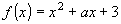
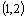
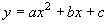
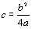
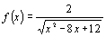
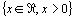
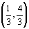
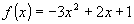

passa pelo ponto
, então a = 2.
quando
, é tangente ao eixo x.O domínio da função real

é .
.
 é
é 
.
são as coordenadas do ponto máximo de
.(Fac. Rui Barbosa - Ba / 1994)Utilizando-se os conhecimentos de função quadrática, pode-se afirmar:
| (01) | Se o gráfico de  passa pelo ponto , então a = 2. |
| (02) | O gráfico de  quando , é tangente ao eixo x. |
| (04) | O domínio da função real  é.
|
| (08) | O conjunto imagem da função real é  . |
| (16) |  são as coordenadas do ponto máximo de . |
 Voltar a Lista de Questões
Voltar a Lista de Questões